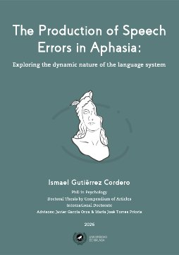
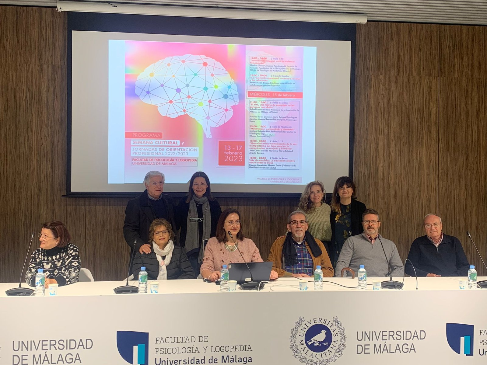
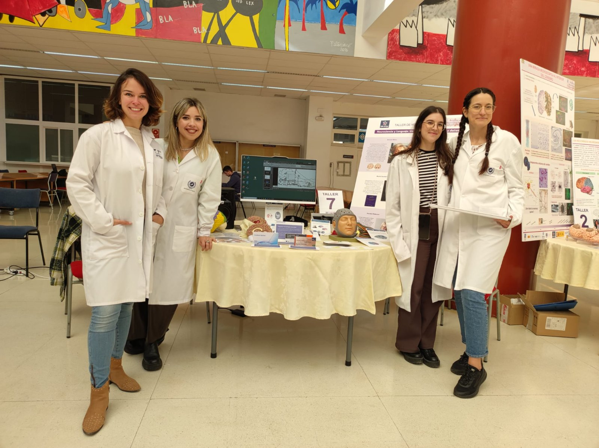

La Universidad de Málaga inviste doctor honoris causa a Matthew Lambon Ralph, referente internacional en afasia
La Universidad de Málaga ha investido como doctor honoris causa a Matthew Lambon Ralph, reconocido internacionalmente por sus decisivas aportaciones al diagnóstico y tratamiento de la afasia, en un…
Leer más
Evento
La Universidad de Málaga inviste doctor honoris causa a Matthew Lambon Ralph, referente internacional en afasia
La Universidad de Málaga ha investido como doctor honoris causa a Matthew Lambon Ralph, reconocido internacionalmente por sus decisivas aportaciones al diagnóstico y tratamiento de la afasia, en un acto apadrinado por nuestra directora Guadalupe Dávila. Es un honor que un referente científico de su nivel pase a formar parte del claustro de nuestra universidad y fortalezca la estrecha colaboración que mantiene con nuestra unidad.
Awana A, Berthier ML, Torres-Prioris MJ, López-Barroso D (2026). Mapping the neural patterns of verbal repetition: an activation likelihood estimation meta-analysis. Brain Structure and Function, 231:75. https://doi.org/10.1007/s00429-026-03119-3
Nuevo artículo en Aphasiology sobre la conducta de aproximación
Variables psicolingüísticas que influyen en la conduite d’approche en tareas de repetición.
Leer más
Publicación
Nuevo artículo en Aphasiology sobre la conducta de aproximación
Aphasiology
Variables psicolingüísticas que influyen en la conduite d’approche en tareas de repetición.
Gutiérrez-Cordero I, Berthier ML, Torres-Prioris MJ, García-Orza J (2026). Psycholinguistic variables influencing conduite d’approche in repetition tasks: an experimental exploration and mediation analysis in a person with conduction aphasia. Aphasiology, 1–41. https://doi.org/10.1080/02687038.2026.2613004
Ismael Gutiérrez Cordero defiende su tesis doctoral
The production of speech errors in aphasia. Sobresaliente cum laude y Mención Internacional. Dirección: Javier García Orza y María José Torres Prioris.
Leer más
Tesis
Ismael Gutiérrez Cordero defiende su tesis doctoral

The production of speech errors in aphasia. Sobresaliente cum laude y Mención Internacional. Dirección: Javier García Orza y María José Torres Prioris.
Ismael Gutiérrez Cordero (2026). The production of speech errors in aphasia: exploring the dynamic nature of the language system. Dirección: Javier García Orza, María José Torres Prioris.
Póster · Academy of AphasiaEcholalia in post-stroke aphasia: prevalence and linguistic correlatesHoet F, López-Barroso D, Vertedor S, Gómez-Pérez ÁY, Dávila G, Berthier ML, Torres-Prioris MJ64th Annual Meeting of the Academy of Aphasia · Liège · 2026 Póster
Póster · Academy of AphasiaDifferential effects of combined donepezil and language therapy on word and pseudoword reading in post-stroke aphasiaLópez-Barroso D, Torres-Prioris MJ, Dávila G, Berthier ML64th Annual Meeting of the Academy of Aphasia · Liège · 2026 Póster
Póster · SNLPrevalence, impairment patterns, and response to cholinergic modulation of visual attention deficits in post-stroke aphasiaDávila G, Gómez-Pérez ÁY, Berthier ML, Torres-Prioris MJ, Birba A, García AMSociety for the Neurobiology of Language · Geneva · 2026 Póster
Póster · SNLBasal forebrain nuclei involvement in post-stroke aphasia: combined effects of cholinergic stimulation and language therapyBerthier ML, Dávila G, Paredes-Pacheco J, Gómez-Pérez ÁY, García-Casares N, Torres-Prioris MJ, López-Barroso DSociety for the Neurobiology of Language · Geneva · 2026 Póster
El habla al revés como ventana al cerebro: nuestra investigadora participa en Pint of Science
Nuestra investigadora María José Torres Prioris ha participado en el festival de divulgación científica Pint of Science con la ponencia "Palabra al revés, cerebros al derecho". La charla abordó el…
Leer más
EventoDivulgación
El habla al revés como ventana al cerebro: nuestra investigadora participa en Pint of Science
Nuestra investigadora María José Torres Prioris ha participado en el festival de divulgación científica Pint of Science con la ponencia "Palabra al revés, cerebros al derecho". La charla abordó el estudio del habla inversa (backward speech), una forma extraordinaria de pericia lingüística que permite explorar cómo el cerebro procesa y estructura el lenguaje.

EventoDivulgación
Arte y afasia: una reflexión sobre nuevas formas de expresión y comunicación
Nuestros directores Marcelo L. Berthier y Guadalupe Dávila han participadoen la charla "El arte, una forma de expresión de las personas con afasia", impartida por el presidente de AFAMA dentro de la…
Leer más
EventoDivulgación
Arte y afasia: una reflexión sobre nuevas formas de expresión y comunicación
Nuestros directores Marcelo L. Berthier y Guadalupe Dávila han participadoen la charla "El arte, una forma de expresión de las personas con afasia", impartida por el presidente de AFAMA dentro de la Semana Cultural de la Facultad de Psicología y Logopedia de la UMA. El encuentro ha permitido reflexionar sobre el valor terapéutico y comunicativo del arte a través de las obras presentadas por María Dolores Domínguez, Manuel Fernández y Guadalupe Parra.

EventoDivulgación
Nuestras investigadoras acercan la afasia a la sociedad en el Día Internacional de la Mujer y la Niña en la Ciencia
Nuestras investigadoras participan en el Día Internacional de la Mujer y la Niña en la Ciencia de la Universidad de Málaga mediante un estand divulgativo para sensibilizar sobre la afasia. A través…
Leer más
EventoDivulgación
Nuestras investigadoras acercan la afasia a la sociedad en el Día Internacional de la Mujer y la Niña en la Ciencia
Nuestras investigadoras participan en el Día Internacional de la Mujer y la Niña en la Ciencia de la Universidad de Málaga mediante un estand divulgativo para sensibilizar sobre la afasia. A través de esta iniciativa, las científicas del equipo comparten los proyectos en curso y acercan la labor investigadora a la sociedad para dar a conocer esta alteración del lenguaje e inspirar a las futuras generaciones.
Marcelo Berthier recibe el Premio ‘Universidad’ de la Sociedad Andaluza de Neurología por su trayectoria científica
Nuestro director, el catedrático Marcelo Berthier, ha sido galardonado con el Premio ‘Universidad’ de la Sociedad Andaluza de Neurología en reconocimiento a su trayectoria y aportaciones en el…
Leer más
EventoPremio
Marcelo Berthier recibe el Premio ‘Universidad’ de la Sociedad Andaluza de Neurología por su trayectoria científica
Nuestro director, el catedrático Marcelo Berthier, ha sido galardonado con el Premio ‘Universidad’ de la Sociedad Andaluza de Neurología en reconocimiento a su trayectoria y aportaciones en el estudio de los trastornos del lenguaje por lesiones cerebrales. Esta distinción, entregada en el acto institucional de la SAN en Granada, destaca asimismo su labor investigadora en el desarrollo de tratamientos innovadores para el abordaje de la afasia.
EventoPremio
Diana López Barroso, galardonada con el Premio Nacional de Investigación para Jóvenes Clara Campoamor
El Ministerio de Ciencia e Innovación ha concedido el Premio Nacional de Investigación para Jóvenes a nuestra investigadora Diana López Barroso, en reconocimiento a sus valiosas contribuciones…
Leer más
EventoPremio
Diana López Barroso, galardonada con el Premio Nacional de Investigación para Jóvenes Clara Campoamor
El Ministerio de Ciencia e Innovación ha concedido el Premio Nacional de Investigación para Jóvenes a nuestra investigadora Diana López Barroso, en reconocimiento a sus valiosas contribuciones científicas. Esta distinción pone en valor la excelencia y el impacto del trabajo realizado en nuestro equipo.